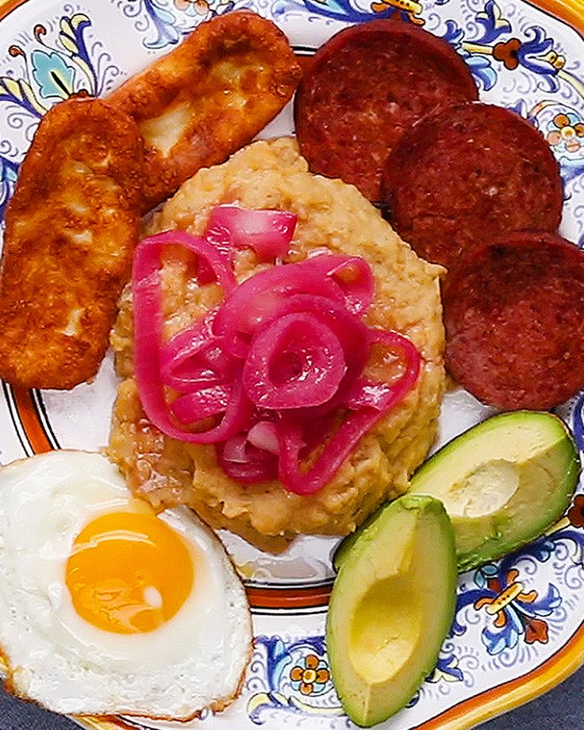

Mangu Con Los 3 Golpes!

What is it?
Tres Golpes (three hits) is the most recognized breakfast of the Dominican Republic. It consists of
fried cheese, salami and eggs. These three easy, delicious and high-protein ingredients complement
each other’s flavors and textures perfectly. It’s usually served with mangú (smashed green plantains),
which together with the Tres Golpes, perfectly represent the Dominican traditional flavors.
Ingredients
- 2 cups canola oil
- 12 slices Queso de Freir Tropical
- 8 slices salami
- 6 eggs, fried, for serving
- 1 avocado, for serving
- 6 plantains (green, unripe)
- 6 tablespoons butter, sliced
- salt
- 1 red onion, sliced into rings
- 1 cup vinegar

Preparation
- Place the sliced onions in a medium bowl with a heavy pinch of salt and vinegar. Let soak while preparing the other ingredients, about 1 hour.
- Peel the plantains and cut into quarters. Place the plantains in a large pot with enough water to cover them by 1 inch (2 cm). Add salt to taste. Bring the plantains to a boil over high heat and cook until they are very tender, about 30 minutes.
- Meanwhile, in a medium skillet, heat the canola oil to 350°F (180°C) over high heat.
- Coat each slice of Dominican frying cheese in flour, and then place the slices in 1¾ cups (420 ML) canola oil and fry until both sides are golden brown, about 3 minutes. Remove from skillet and transfer to a paper towel-lined plate.
- Add another tablespoon of oil to the skillet and fry the salami until brown and crispy on both sides, 4 minutes. Remove from the skillet, transfer to a paper towel-lined plate.
- Wipe out the skillet, and add another tablespoon of oil to the pan. Pour in the onions and their soaking liquid. Sauté until the onions are soft and bright pink, about 10 minutes.
- Once the plantains are tender, scoop them out from the water and place in a separate large bowl, and keep the starchy boiling liquid warm on the stove.
- Add the butter and about 1 cup (240 ml) of the hot starchy plantain liquid. Mash the cooked plantains together until it is creamy and smooth. Add more liquid as needed.
- Serve the mangú with the fried cheese, fried salami, avocado, and fried eggs. Garnish with pickled onions.
Back to Homepage